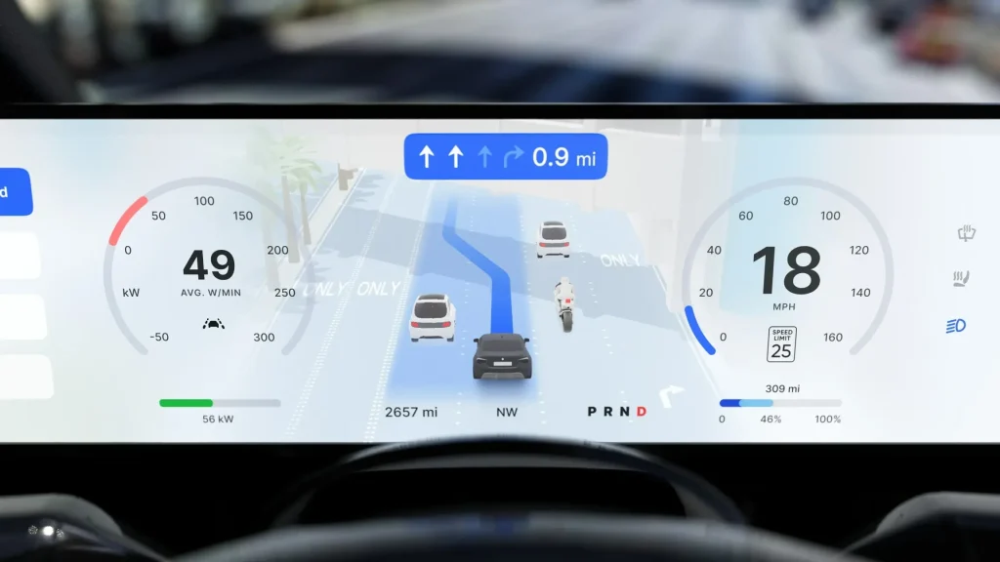

自動運転マップに関する調査によれば、業界は「過去を記録する」段階から「リアルタイム生成マップで未来をプレビューする」段階へと移行しつつある。
業界は「マップレスNOA（Navigate on Autopilot）」を自動運転の主流アプローチとして採用した。これによりオフラインHDマップへの依存度が低下しつつある。HDマップの開発にはさまざまな障壁があったためだ。「マップレス」とは「マップ事前情報」から「リアルタイムマップ構築」、さらには「ワールドモデル」へと進化する過程を表し、ADASアルゴリズムは「ルールドリブン」から「データドリブン」へと転換している。
2022年以前： 業界は幾何学的精度を重視したHDマップに注力しており、従来のADASはルールベースの環境処理に依拠していた。
2023〜2024年： トポロジー・セマンティクス・鮮度を備えた軽量マップ（LDマップ）が注目を集め、マップレスNOAの開発も進展した。
2025年以降： 3D Gaussian SplattingやNeRFなどの技術により、マップは単に「過去を記録する」だけでなく「未来をプレビューする」ことが可能になった。ワールドモデルは自己教師あり学習で時空間パターンを抽出し、マルチモーダルセンサーデータとリアルタイムのクラウドソーシング情報を統合した動的環境知識ベースを実現する。
Baidu MapAuto 6.5は、中国初の全シナリオ対応3Dレーンレベルマップであり、人間とシステムが協調して運転する状況をサポートする。以下の要素を統合している。
提供されるデータサービス：
2025年3月、LeapmotorはLEAP 3.5をリリースし、Baidu MapsのLDデータアーキテクチャを採用した。
コア技術：
ベクトル化HDマップ構築技術：
MapTR — リアルタイム都市マッピング、L2+ ADASシステム、計算リソースが限られた組み込みプラットフォームに適している。
VectorMapNet — 複雑な高速道路インターチェンジのモデリング、学術研究用途、工事区間のような可変長の細部シナリオに最適である。
NavInfoは、ワールドモデル駆動の自動運転に「時空間認知」を追加することを提唱している。マップは「静的レイヤー」から「動的データエンジン」へと進化し、インテリジェント運転における「事前センサー」として機能するようになった。
環境理解： 車両の自己位置推定と、レーン線・交通標識・障害物の認識。
動的予測： 交通参加者の行動軌跡を予測し、突然の車線変更や急ブレーキなどの潜在的危険を特定する。
グローバル計画： 異なる天候・道路条件にわたる長期的環境シミュレーションを考慮した最適走行経路を生成する。
シナリオ推論： 過去の観測に基づいて物理的に合理的な未来シナリオを生成し、予期しない事故や工事区域の変化などのリスクを予測する。
マルチモーダル融合： 2D画像・3D点群・Occupancyグリッドを統合し、nuScenesデータセットのテストでBEV幾何学的一貫性98.7%を達成した。
意思決定最適化： 強化学習により人間に近い運転を実現し、北京の五環路における交通効率が28%向上することが計測された。
OEMは自動運転マップ再構築におけるNeRF（Neural Radiance Fields）技術の探索とデプロイを積極的に進めている。
このシステムは「静的BEV + 動的BEV + NeRF強化Occupancy」の三重アーキテクチャを採用している。
静的BEVネットワーク： マルチカメラTransformerがデータをBEV表現に融合する。カメラ障害時には、NeRFが欠落した道路端・レーン線を再構築する。
動的BEVネットワーク： 時空間アテンションによる追跡とNeRFの連続性モデリングにより、速度・加速度推定誤差を0.3m/s未満に抑える。
Occupancyネットワークのアップグレード： 解像度が0.2mから0.1mに改善され、NeRFが生成するサブピクセル詳細により30cmの縁石や5cmのマンホールを検出できるようになった。
先行デプロイ： Xpeng、Mercedes-Benz、Li AutoはすでにNeRF技術を量産車に搭載している。
探索段階： TeslaとBMWはテクニカルパートナーシップを通じてより深い応用開発を進めている。
将来展望： ハードウェア計算能力の向上（Blackwellアーキテクチャなど）とオープンソースエコシステムの拡大により、NeRFは自動運転マップの「基盤標準技術」となり、業界は「リアルタイム生成マップ」の実現に向けて前進していくと見られる。